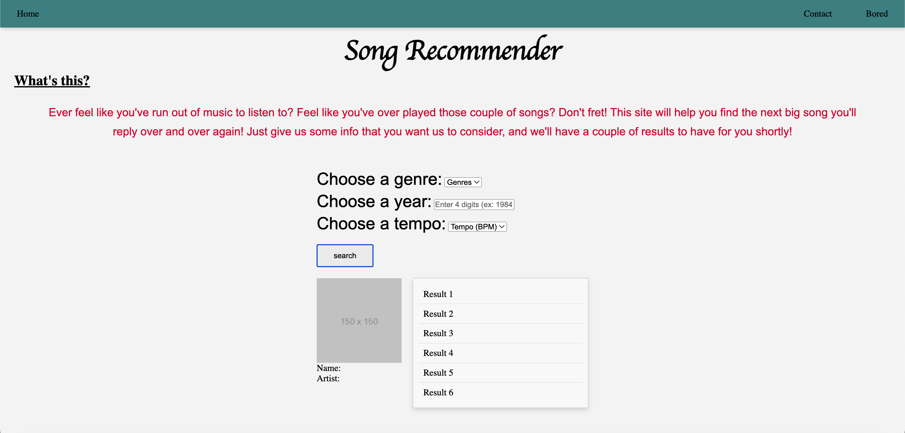
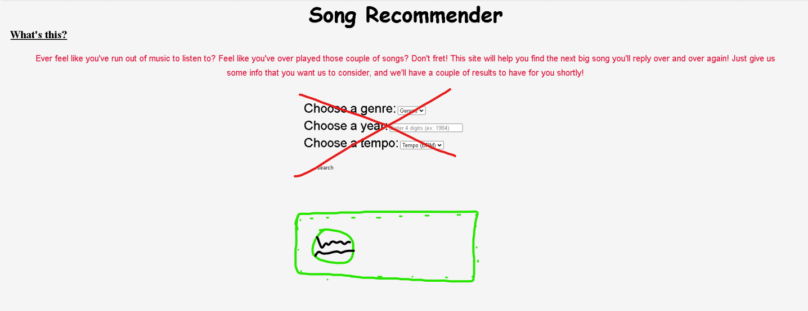

This song recommender will ask the user for a genre, release year, and the tempo (BPM), of a song. These can be very random, allowing the user to input any answer, and if it exists, the webapp will return a list of songs that fit the user's criteria, or similar. I plan to use the Spotify API for this project, and because this is my first time working with API's (doing both front-end and back-end together actually), this will take some time to complete. It is important to say I have been receiving guidance and some pointers from friends, so I'd like to acknowledge and thank them for that.
The languages that I will be using for this project are HTML and CSS for Front-End, and JavaScript and Python for the Back-End.
Before the Fall '24 semester started, I had worked mostly on the Front-End side of the webapp. Below is a screenshot of the site with placeholders.
In the screenshot above, we can see the following things:
In the "Choose a Genre" slot, I plan to have the user select one of the available genres in the drop-down menu. Next in the "Choose a Year", I will allow the user to input a year (I will find a way to limit it to a certain interval), and lastly in the "Choose a Tempo" slot, the user will be able to input a random number of beats per minute, and try to find a song that is exactly that number of beats, or close to that number.
We then have the "Submit" button. When clicked (it works), a list of songs (that are compatible with the criteria) will appear. Next to it will be the cover art of the song that is selected. Right under the cover art, I will have the title of the song displayed, as well as the artist(s). However, there is one thing I am currently working on that makes this project interesting (to me at least):
Before any of these options appear, I want the user to authenticate themselves using Spotify (since Spotify API asks for this). The idea is that once the user reaches my site for the first time, the first thing they see is my quick paragraph and the authentication button. When clicked, the button takes them over to Spotify to log in. After that's complete, the user is again redirected back to my site and is then able to see the options and use the WebApp. At the time of writing this, I am still working on the authentication button.
At the time of writing this, the authentication process works! I introduced environment variables to store important pieces of information (such as API keys, and other secret info), and further expanded my Flask file to include a logout feature as well. As of now, all I have left to do is introduce SpotiPy (an API wrapper to use with the Spotify API), and get the API working. Once this is completed, I am able to improve the Web Application's look, and finally publish this.
In the recording above, I had already linked my account with the WebApp, so it skips the authentication screen. As it can also be seen, I added a Logout feature if the user decides to stop their session. Originally, this was supposed to be a temporary feature for myself when I was testing the WebApp, but I've decided to keep it in!
As stated earlier, I've yet to work on the actual API, which explains why the user-input fields are blank. But this is the next objective with this WebApp, and following that will be simple Front-End designing and development, just to make the WebApp visually stunning?
Once I am done with the authentication, all I will have to do is implement the API and connect them to the placeholders, and simply make the site visually appealing. I think I'm almost done, but it will take some time.
01/16/25 Closing thoughts: Just need more time to connect the API and further improve the Front-End. With College Courses starting up again, I think this project will be completed by the summer of 2025 (hopefully!)
Back to Main Page